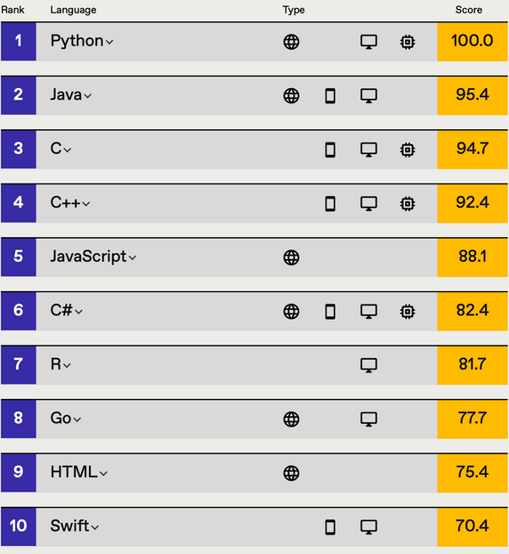
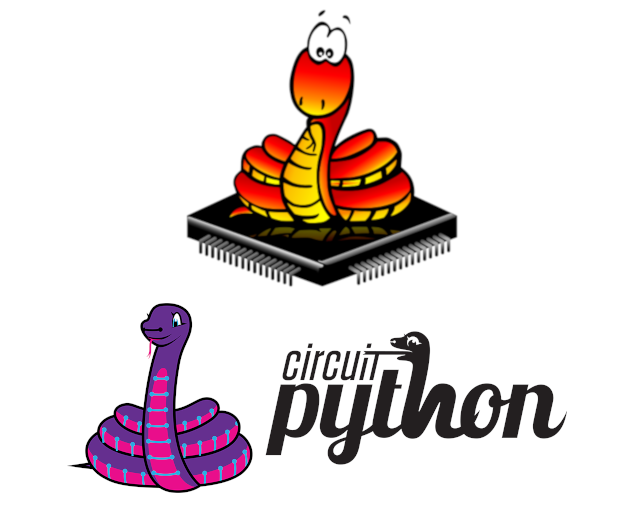
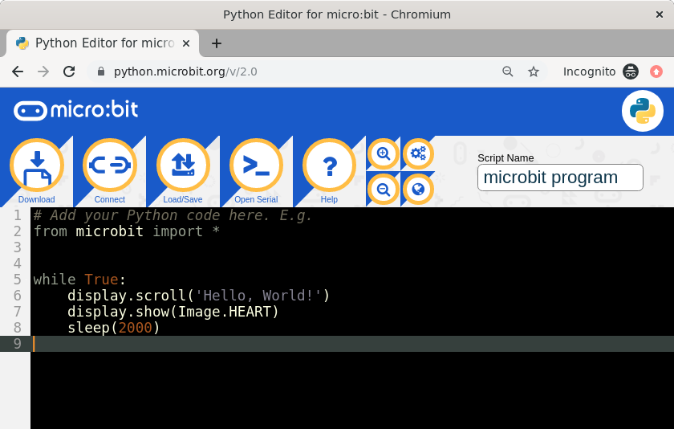
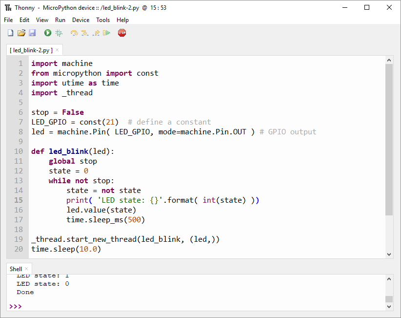
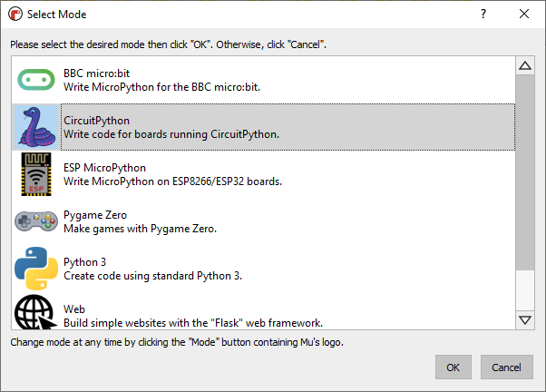
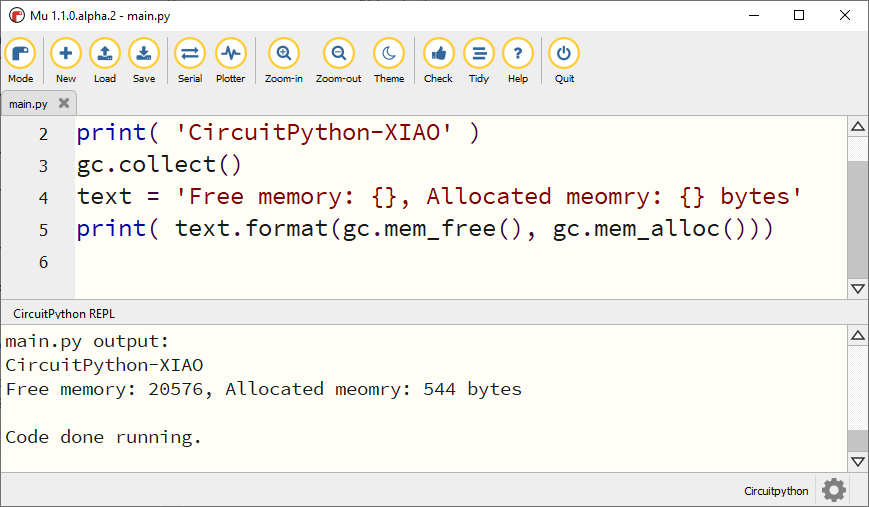
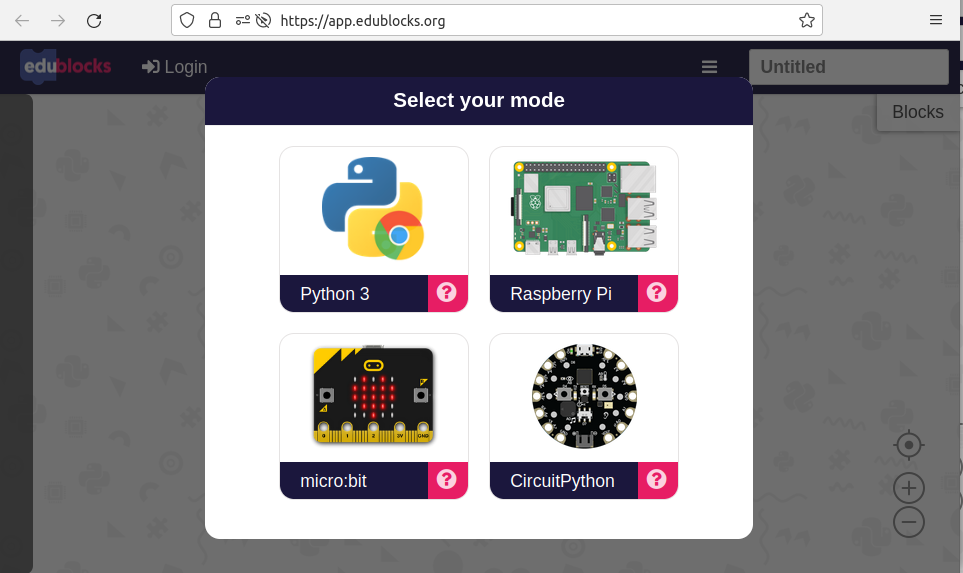
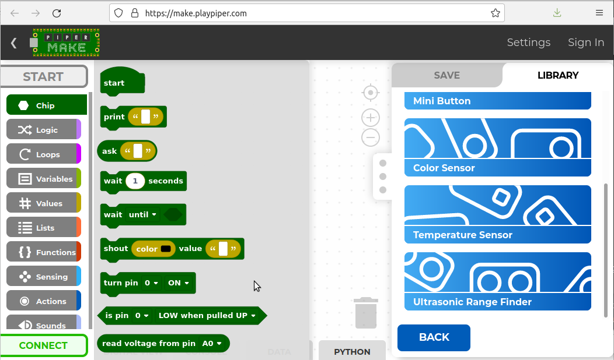
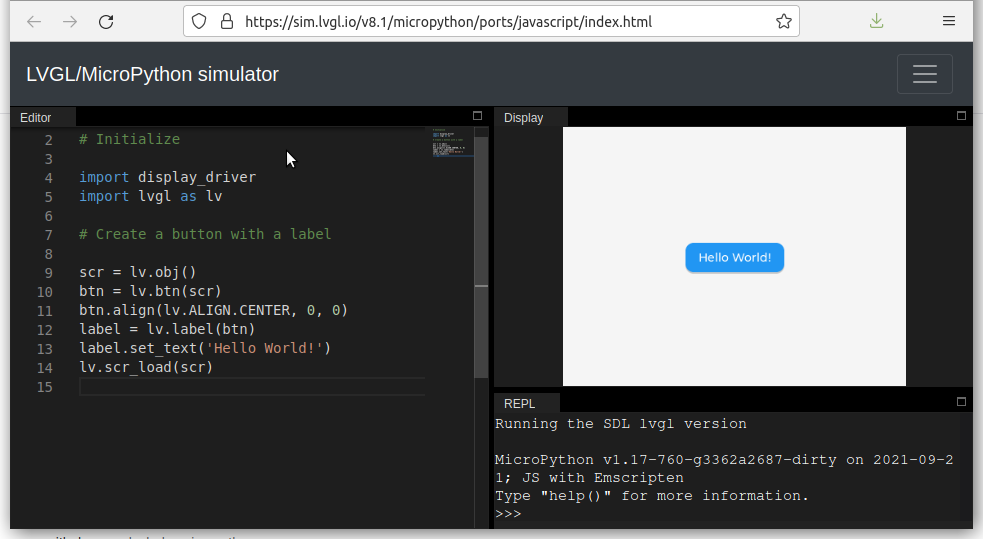

Python for Hardware Programming#
Keywords: Hardware-Oriented Python Programming, Python for Embedded System Engineers, MicroPython, CircuitPython
▷ ภาษาไพธอน#
ภาษาคอมพิวเตอร์มีหลายภาษาให้เลือกใช้แตกต่างกันไป ถ้าจะเลือกใช้ภาษาไพธอน (Python) ก็เป็นหนึ่งตัวเลือกและกำลังได้รับความนิยมในปัจจุบัน มีการใช้งานแพร่หลาย อาจเป็นอันดับหนึ่งในการสำรวจล่าสุด เช่น จากข้อมูลการสำรวจโดย StackOverflow, TIOBE และ IEEE Spectrum

Source: "Top Programming Languages 2021", IEEE Spectrum
การเรียนรู้โค้ดดิ้ง (Coding) และภาษาคอมพิวเตอร์ ถือว่าเป็นพื้นฐานที่สำคัญสำหรับการศึกษา สายวิทยาศาสตร์และวิศวกรรมศาสตร์ โดยเฉพาะอย่างยิ่งในระดับอุดมศึกษา และคงรวมไปถึงสายอาชีพที่ต้องใช้ทักษะที่เกี่ยวข้องกับคอมพิวเตอร์
ถ้าจะเรียนรู้การเขียนโค้ดด้วยไพธอน ก็มีเครื่องมือทางซอฟต์แวร์ที่เป็น Open Source และฟรี เช่น Jupyter หรือ Visual Studio Code IDE ที่ใช้งานได้กับหลายระบบปฏิบัติการ และมี Python Extension ไว้ให้ใช้งานด้วย หรือใช้งานผ่านหน้าเว็บเบราว์เซอร์และในระบบคลาวด์ เช่น Google Colab
การเรียนรู้ภาษาคอมพิวเตอร์ Python ในปัจจุบัน แม้ว่าจะเริ่มต้นที่ตัวภาษาเอง เช่น Python Core Language ที่กล่าวถึง ตัวแปร ชนิดข้อมูล รูปแบบการใช้คำสั่งแบบต่าง ๆ แต่ก็ยังมีไลบรารีต่าง ๆ ให้เลือกใช้อีกมากมายจำแนกต่างลักษณะของงาน เช่น การใช้งานเพื่อประมวลผลและวิเคราะห์ข้อมูล (Data Analytics) การประมวลผลเชิงเลข (Numerical Computing / Digital Signal Processing) การจัดการระบบคอมพิวเตอร์และเครือข่ายโดยอัตโนมัติ การทดสอบความปลอดภัยไซเบอร์ การประยุกต์ใช้งานด้าน Internet of Things (IoT), Machine Learning (ML) / Artificial Intelligence (AI) และรวมไปถึงการใช้ภาษาไพธอนสำหรับ การออกแบบวงจรดิจิทัลหรือชิปประเภท SoC / FPGA เป็นต้น
ถ้าจะยกตัวอย่างของตัวบ่งชี้ระดับความนิยมของภาษาไพธอน อาจดูได้จากจำนวนหนังสือที่ได้มีการตีพิมพ์ (ในต่างประเทศ) ถ้าเราลองสืบค้นจากเว็บไซต์ของ Amazon และจะเห็นได้ว่า ผลการค้นหา มีรายการหนังสือจำนวนหลายร้อย หรืออาจมากกว่าหนึ่งพันเล่มที่เกี่ยวข้องกับภาษาไพธอน โดยจำแนกตามสาขาหรือแขนงความรู้ที่มีการนำไปใช้งาน
▷ การใช้ภาษาไพธอนสำหรับการโปรแกรมฮาร์ดแวร์#
การใช้งานภาษาไพธอน มิได้จำกัดอยู่แค่คอมพิวเตอร์ทั่วไป ประเภท Server / Desktop / Notebook และสามารถนำไปใช้กับคอมพิวเตอร์อีก ประเภทที่เรียกว่า "คอมพิวเตอร์บอร์ดเดี่ยว" (Single-Board Computer: SBC) และไมโครคอนโทรลเลอร์ (Microcontroller: MCU) ที่มีขนาดเล็ก ใช้พลังงานต่ำกว่า และมีทรัพยากรน้อยกว่าหรือจำกัด
ระบบไซเบอร์-กายภาพ (Cyber-Physical System: CPS) เกี่ยวข้องกับการใช้งานระบบคอมพิวเตอร์ เพื่อเชื่อมต่อกับโลกทางภายภาพกับโลกดิจิทัล ผ่านระบบเครือข่ายและอินเทอร์เน็ต มีการรับสัญญาณทั้งแบบแอนะล็อกและดิจิทัลผ่านทางอุปกรณ์เซ็นเซอร์ (Sensors) หรือส่งสัญญาณไปควบคุมอุปกรณ์ไฟฟ้าทางกล เช่น รีเลย์ มอเตอร์ไฟฟ้า หรืออื่น ๆ เป็นต้น หรือเรียกประเภทนี้ว่า แอคชูเอเตอร์ (Actuators) ซึ่งเปลี่ยนพลังงานไฟฟ้าให้เป็นพลังงานกลหรือการเคลื่อนไหว
การใช้ภาษาไพธอนสำหรับระบบที่เป็น CPS ก็เป็นอีกหนึ่งหัวข้อที่สามารถนำมาเรียนรู้ในชั้นเรียนได้ในช่วงแรก ๆ ไม่จำเป็นต้องรอเรียนวิชาเกี่ยวข้องกับฮาร์ดแวร์โดยเฉพาะหรือไมโครคอนโทรลเลอร์ในระดับสูงขึ้นไป
▷ ตัวเลือกไพธอนสำหรับไมโครคอนโทรลเลอร์#
ในปัจจุบันก็มี MicroPython และ CircuitPython เป็นตัวเลือกที่ได้รับความนิยม และสามารถนำมาใช้กับไมโครคอนโทรลเลอร์ 32 บิต เช่น ตามรูปแบบการทำงานของสถาปัตยกรรมตระกูล ARM และ RISC-V เป็นต้น
ตามความคิดเห็นของผู้เขียน แม้ว่า MicroPython ซึ่งได้รับการพัฒนามาตั้งแต่ราวปีค.ศ. 2014 จะเหมาะสำหรับการเรียนรู้ Embedded Systems / Microcontroller Programming แต่ CircuitPython น่าจะเหมาะสำหรับผู้เริ่มต้นมากกว่า

รูปภาพ: MicroPython / CircuitPython Logos
บริษัท Adafruit Industries (USA) ได้นำ MicroPython มาพัฒนาต่อยอด และแยก branch ออกไปเป็น CircuitPython และมีการพัฒนามาอย่างต่อเนื่อง ล่าสุดเป็นเวอร์ชัน 7.0.0 (October 2021)
อีกกรณีหนึ่งที่แสดงให้เห็นแนวโน้ม เช่น ในปีค.ศ. 2021 เป็นต้นมา ผู้พัฒนา Arduino ก็ได้เริ่มหันมาใช้ MicroPython และเลือกใช้ OpenMV IDE สำหรับบอร์ดในกลุ่ม Arduino Proเช่น Portenta H7
▷ การใช้ภาษาไพธอนกับไมโครคอนโทรลเลอร์#
ถ้าเราใช้ภาษาไพธอนแทน C/C++ ในการเขียนโปรแกรมระดับฮาร์ดแวร์ เราควรจะทำสิ่งต่อไปนี้ได้ เช่น
- การเขียนหรืออ่านสถานะลอจิกที่ขา Digital I/O
- การเปิดใช้งานอินเทอร์รัพท์ (Interrupt Handling) และการตอบสนองเมื่อเกิดเหตุการณ์จากภายนอก
- การเปิดใช้งานไทม์เมอร์หรือตัวนับ (Timer) ในโหมดต่าง ๆ
- การสร้างสัญญาณดิจิทัลแบบมีคาบแต่ปรับความกว้างของพัลส์ได้ (Pulse Width Modulation: PWM)
- การอ่านค่าจากสัญญาณอินพุตแบบแอนะล็อกโดยใช้วงจร ADC (Analog-to-Digital Converter) ที่อยู่ภายใน หรือใช้วงจรไอซีภายนอก เช่น ไอซีประเภท SPI / I2C ADC
- การเขียนค่าเพื่อสร้างสัญญาณเอาต์พุตแบบแอนะล็อก โดยใช้วงจร DAC (Digital-to-Analog Converter) ที่อยู่ภายใน หรือใช้วงจรไอซีภายนอก
- การเข้าสู่โหมดประหยัดพลังงาน (Sleep mode) และถูกปลุกให้ตื่น (Wakeup) มาทำงานต่อด้วยเหตุการณ์ตามที่กำหนดไว้
- การใช้งานวงจร RTC (Real-Time Clock) ที่อยู่ภายใน หรือวงจรภายนอก เชื่อมต่อผ่านบัส I2C
- การเชื่อมต่อกับระบบเครือข่าย เช่น ผ่าน Ethernet และ CAN bus หรือแบบไร้สายด้วย Wi-Fi หรือ BLE เป็นต้น
- การเชื่อมต่อกับอุปกรณ์อื่น โดยใช้บัส I2C หรือ SPI เป็นต้น
- การรับส่งข้อมูลแบบบิตอนุกรมโดยใช้ UART รวมถึง RS485 / Modbus protocol เป็นต้น
- การเขียนโปรแกรมแบบหลายงานให้ทำงานได้พร้อม ๆ กัน หรือ มัลติเธรด (Multi-Tasking / Task Concurrency)
MicroPython และ CircuitPython มีตัวอย่างโค้ดสาธิตตามรูปแบบที่ได้กล่าวไป (และมีความแตกต่างกันในบางกรณี ทั้งนี้ก็ขึ้นอยู่กับไมโครคอนโทรลเลอร์ที่ได้เลือกใช้งาน) แม้ว่าการทำงานและการตอบสนองจะช้ากว่ากรณีที่ใช้ภาษา C/C++ ในการเขียนโปรแกรมสำหรับไมโครคอนโทรลเลอร์
▷ จุดเด่นหรือข้อดีของ CircuitPython#
- รองรับการใช้งานกับบอร์ดไมโครคอนโทรลเลอร์จำนวนมาก มีมากกว่า 240 รายการ จากหลายผู้ผลิต และราคาของบอร์ดก็แตกต่างกันไป (สามารถดูรายการบอร์ดที่นำมาใช้ได้ รวมถึงไฟล์ CircuitPython firmware แยกตามบอร์ดที่เลือกจะเลือกใช้)
- มีไลบรารีให้เลือกใช้จำนวนมาก รวมถึง Documentation / Tutorials
- มีตัวจำลองการทำงานบนเว็บเบราว์เซอร์ ถ้ายังไม่มีฮาร์ดแวร์จริง เช่น
- Adafruit Circuit Playground Simulator สำหรับบอร์ดอย่างเช่น
แต่ CircuitPython ก็มีข้อจำกัดอย่างเช่น ไม่รองรับการใช้งานอินเทอร์รัพท์ได้โดยตรงและยังไม่รองรับการทำงานแบบ Multi-Threading / Asyncio
▷ ตัวเลือกบอร์ด MCU สำหรับ CircuitPython#
ถัดไปเป็นตัวอย่างบอร์ดที่สามารถเลือกมาใช้ได้กับ CircuitPython และบางตัวเลือกก็มีราคาไม่แพง และก็ไม่จำเป็นว่า ต้องเลือกใช้บอร์ดของบริษัท Adafruit
- RP2040 MCU (Raspberry Pi Trading, UK)
- ESP32-S2 MCU (Espressif, China)
- LOLIN S2 Mini (WeMos)
- NodeMCU ESP-12K (Ai-Tinker, China)
- MuseLab nanoESP32 S2
- Saola 1 ESP32-S2 WROVER (Espressif)
- Cucumber R (Gravitech)
- STM32F4 MCU (STMicroelectronics)
- nRF528xx (Nordic Semiconductors)
- ATSAMD21/51 (Atmel/Microchip)
บอร์ดไมโครคอนโทรลเลอร์ในกลุ่ม High-end ใช้งานได้กับ MicroPython ได้ และเน้นงานทางด้าน Machine Vision / Embedded AI (ใช้ร่วมกับโมดูลกล้อง เช่น OV2640 หรือ OV7740) ก็มี เช่น
- OpenMV Cam M7 (STM32H743VI, ARM Cortex-M7)
- Arduino Portenta H7 (STM32H747I/G, ARM Cortex-M7/M4)
- Sipeed Sipeed Maix Bit (Kendryte K210, RISC-V 64-bit)
- Sipeed Maixduino Kit (Kendryte K210, RISC-V 64-bit)
- M5StickV AI (Kendryte K210, RISC-V 64-bit)
ข้อสังเกต:
- ทางบริษัท Adafruit ได้เจาะจงใช้ชิปไมโครคอนโทรลเลอร์ที่เชื่อมต่อหรือรองรับการใช้งาน USB ได้โดยตรงหรือ Native USB (ไม่ใช้วิธีเชื่อมต่อผ่านวงจรภายนอกที่ทำหน้าที่เป็น USB-to-Serial)
- สำหรับผู้ที่ใช้บอร์ดอย่างเช่น ESP32 ซึ่งไม่รองรับการใช้งาน Native USB ก็แนะนำให้ใช้ MicroPython แต่ถ้าเป็นบอร์ด ESP-S2 หรือ ESP-C3 จะใช้กับ CircuitPython ได้
- บอร์ดอย่างเช่น BBC Micro:bit v2 นอกจากจะรองรับการเขียนโค้ดแบบต่อบล็อกด้วย Microsoft MakeCode for Microbit หรือเขียนโค้ดด้วยภาษา Static TypeScript (STS) สามารถนำมาใช้เขียนโค้ด MicroPython และ CircuitPython ได้ด้วย
- Microsoft MakeCode Editor สำหรับบอร์ด Micro:bit สามารถแปลงบล็อกคำสั่งให้เป็นโค้ดไพธอน แต่จะใช้ชุดคำสั่ง Python API ที่แตกต่างจาก MicroPython for Micro:bit
- ในกรณีที่ใช้บอร์ดคอมพิวเตอร์ประเภท SBC อย่างเช่น Raspberry Pi ก็สามารถใช้ Python 3 ได้ตามปรกติ โดยทั่วไปแล้วก็จะช้งานร่วมกับระบปฏิบัติการ Linux (Debian-based) เช่น Raspbian OS, Ubuntue MATE / Server เป็นต้น และมีไลบรารีสำหรับภาษาไพธอน เช่น GPIO Zero และ RPi.GPIO เพื่อการใช้งานขา GPIO การรับส่งข้อมูลผ่าน Serial/UART และ SPI / I2C / PWM ที่ขา I/O แบบ Pin Headers บนบอร์ด ทำให้เชื่อมต่อกับอุปกรณ์หรือวงจรอื่นภายนอกได้ ซึ่งแตกต่างจากการใช้งานคอมพิวเตอร์ทั่วไปที่ไม่มีขา I/O ในลักษณะนี้
- ไลบรารีของ CircuitPython ก็สามารถนำมาใช้กับบอร์ด Raspberry Pi ได้เช่นกัน โดยติดตั้งใช้งานไลบรารี และ API ที่มีชื่อว่า Adafruit Blinka
- ถ้าเน้นใช้งานกราฟิกโดยใช้โมดูล TFT LCD ก็มีไลบรารีที่เป็น Open Source สำหรับ MicroPython ที่มีชื่อว่า
LVGL (Light and Versatile Embedded Graphics Library)
- มีไลบรารีสำหรับทั้งภาษา C/C++ และ MicroPython port for LVGL (Git repo)
- มี Web-based LVGL/MicroPython Simulator ให้ลองเขียนโค้ดและรันโค้ดได้ในหน้าเว็บเบราว์เซอร์
▷ แนะนำ IDEs สำหรับ MicroPython / CircuitPython#
ซอฟต์แวร์ประเภท IDE ที่สามารถนำมาใช้งานได้มีดังนี้
- Thonny IDE — Open Source, Multi-OS Support เหมาะสำหรับ MicroPython หรือ CircuitPython
- Mu Editor — Open Source, Multi-OS Support เหมาะสำหรับ CircuitPython
- Online MicroPython Editor for Micro:bit — Online, Web-based Coding ใช้สำหรับบอร์ด BBC Micro:bit v1 / v2
- OpenMV IDE for MicroPython — Open Source, Multi-OS Support แต่ใช้สำหรับบอร์ดบางประเภทเท่านั้น เช่น OpenMV Cam M7, Arduino Portenta H7 สำหรับงานด้าน Embedded Machine Vision
- Sipeed MaiPy IDE — Customized OpenMV ใช้กับบอร์ดที่เลือกใช้ชิป Kendryte K210 เช่น บอร์ด M5StickV ของบริษัท M5Stack
- VS Code + Extensions เช่น
- EduBlocks Online Editor ใช้สำหรับบอร์ด
- Piper Make ใช้งานแบบออนไลน์สำหรับ การเขียนโค้ดในรูปแบบการต่อบล็อกแล้วแปลงให้เป็นโค้ด CircuitPython ได้โดยอัตโนมัติ แล้วนำไปอัปโหลดไปยังบอร์ด Raspberry Pi RP2040
- Wokwi เป็น Online Editor / Simulator บนหน้าเว็บเบราว์เซอร์ได้
ที่สามารถรันโค้ด MicroPython โดยใช้ไลบรารีที่มีชื่อว่า
rp2040jsสำหรับภาษา JavaScript ที่สามารถเลียบแบบการทำงานชุดคำสั่งระดับล่างของ RP2040 (จำลองการทำงานของฮาร์ดแวร์ภายในได้บางส่วน) - uPyCraft IDE by DFRobot — ไม่แนะนำให้ใช้งานเนื่องจากไม่มีการพัฒนาอย่างต่อเนื่อง (Github repo)

รูปภาพ: Online MicroPython Editor (v2) for BBC Micro:bit

รูปภาพ: Thonny IDE for MicroPython-ESP32

รูปภาพ: Mu Editor for CircuitPython - Board Selection

รูปภาพ: Mu Editor for CircuitPython

รูปภาพ: EduBlocks Online Editor

รูปภาพ: Piper Maker Online Editor for Raspberry Pi RP2040

รูปภาพ: LVGL/MicroPython Web-based Simulator
▷ กล่าวสรุป#
ภาษาไพธอนสามารถนำมาใช้เขียนโปรแกรมได้สำหรับไมโครคอนโทรลเลอร์ ซึ่งมีตัวเลือกที่ได้รับความนิยมในปัจจุบันคือ MicroPython และ CircuitPython ดังนั้นสำหรับผู้ที่มีความรู้พื้นฐานการเขียนคอมพิวเตอร์โดยใช้ภาษาไพธอนมาบ้างแล้ว และสนใจทางด้านฮาร์ดแวร์และระบบสมองกลฝังตัว การใช้ภาษาไพธอนน่าจะเป็นตัวเลือกที่ง่ายกว่าการใช้ภาษา C/C++ หรือ Arduino หรือจะเริ่มต้นเรียนรู้ภาษาไพธอนไปพร้อม ๆ กับการฝึกเขียนโปรแกรมไมโครคอนโทรลเลอร์ในระดับฮาร์ดแวร์ ก็สามารถทำได้เช่นกัน บอร์ดไมโครคอนโทรลเลอร์แนะนำที่มีราคาไม่แพงและรองรับภาษาไพธอน เช่น Raspberry Pi Pico หรือบอร์ดไมโครบิต BBC Micro:bit v2 เป็นต้น
This work is licensed under a Creative Commons Attribution-ShareAlike 4.0 International License.
Created: 2021-11-03 | Last Updated: 2022-04-03